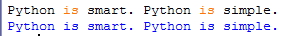
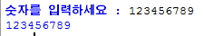
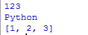
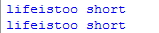
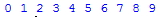

chapter.05 - 입력과 출력
어떤 변수에 사용자로부터 입력받은 값을 대입하고 싶을 때는 어떻게 해야할까?
(1)input의 사용
int 또는 float,str형의 데이터를 사용자로부터 입력을 받습니다.
파이썬 2.7버젼의 경우 input 대신 raw_input을 사용해야합니다.
input으로 입력된 데이터는 str형으로 저장되므로 int,float형으로 사용시 형변환을 사용
#예제5.1
a=input()
print(a)

->위의 예제는 'Python is smart. Python is simple.'을 입력시 출력되는 결과를 보여준다.
-프롬프트 추가하기
사용자로부터 입력을 받을 때 "숫자를 입력하세요" 라던지 "이름을 입력하세요"라는
질문을 포함하고 싶을 것이다. 이것도 input함수를 사용하면 된다.
#예제5.2
number = input("숫자를 입력하세요 : ")
print(number)

(2)print를 자세히 알아보자
우리가 앞서 사용해 왔던 print가 하는 일은 자료형을 출력하는 것이다.
#예제5.3
a=123
b="Python"
c=[1,2,3]
print(a)
print(b)
print(c)

위의 예제는 우리가 평소에 사용한 print문이다. 조금 더 자세하게 알아보자.
*1.따옴표(")로 둘러싸인 문자열은 + 연산과 동일하다.
#예제5.4
print("life" "is" "too short")
print("life"+"is"+"too short")

위의 두문장은 출력 결과가 같다.
즉 따옴표로 둘러싸인 문자열을 연속해서 쓰면 '+'연산을 한것과 마찬가지이다.
*2.문자열 띄어쓰기는 콤마로
#예제5.5
print("life","is","too short")
#예제5.6
for i in range(10):
print(i,end=' ')

->아직 for문을 배우지 않았으므로 그냥 결과값을 확인하기 바란다.
<출처> 점프 투 파이썬, 박응용(https://wikidocs.net/book/1)